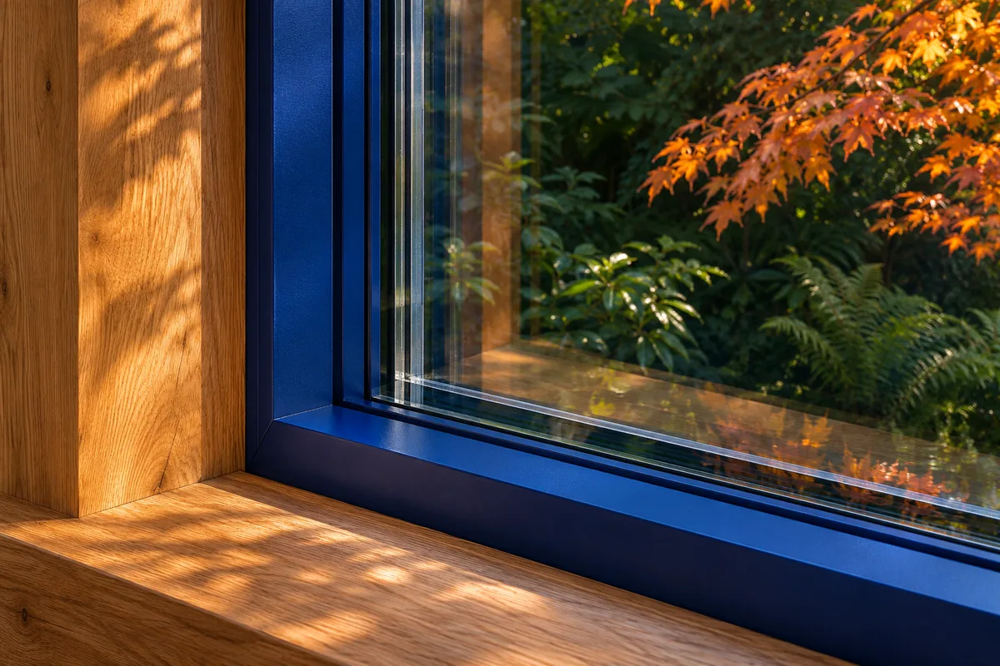
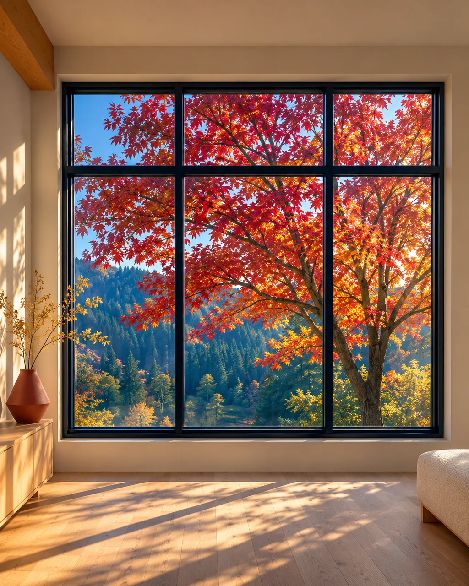
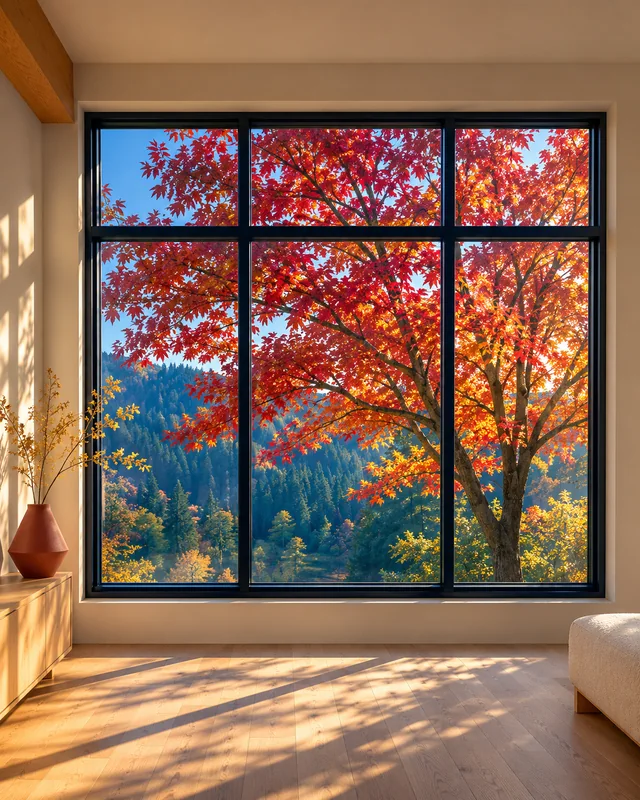
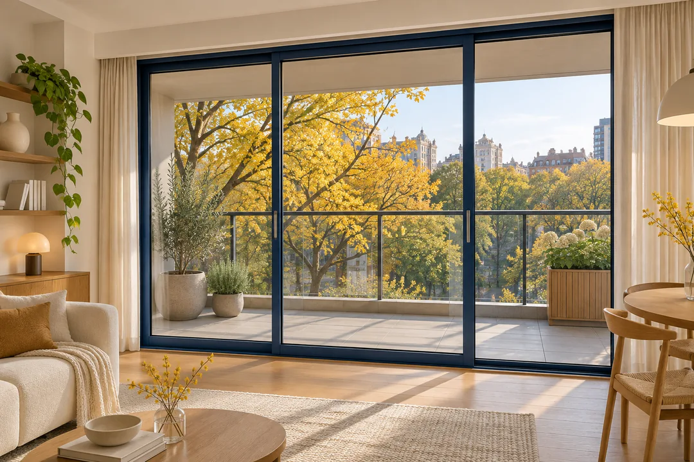
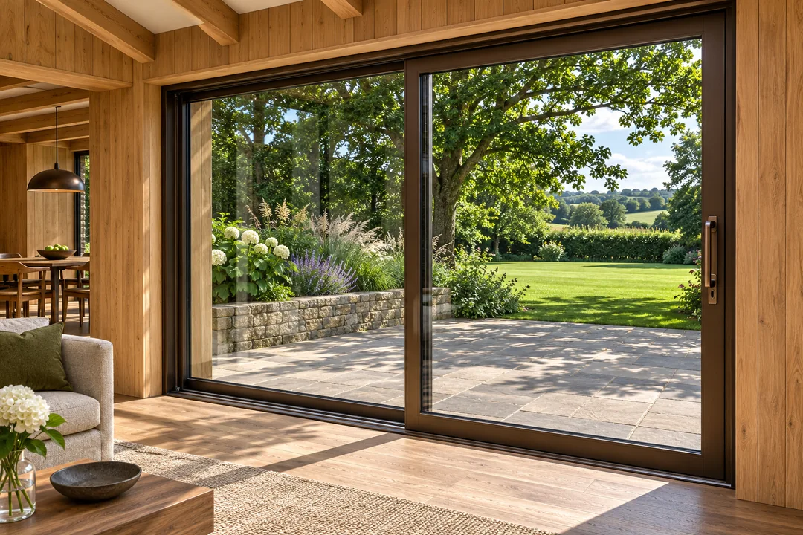

Замер и расчёт
Проверка проёма, обсуждение открывания, профиля и подоконников.
Окна для квартиры и загородного дома. Посмотрите варианты остекления, пример расчёта и условия замера.


Проверка проёма, обсуждение открывания, профиля и подоконников.

Замена окон, отливы, подоконники, откосы и вывоз старых рам по договорённости.

Холодные и тёплые решения, распашные и раздвижные системы.

Широкие проёмы для дома, веранды и видом на участок.
Регулировка створок, замена ручек, уплотнителей и сеток.
Подбор стеклопакетов для оживлённой улицы или солнечной стороны.
Сравните примерные цены конструкций за квадратный метр. Для расчёта с учётом площади, монтажа и других опций откройте калькулятор.
Фото иллюстрируют типы решений. Детали конкретной комплектации могут отличаться.
Показано 12 из 12
Квартира
Для кухни или кабинета. Поворотно-откидная створка.
Квартира
Две секции, одна открывается. Базовый вариант для комнаты.
Квартира
Широкий проём со средней открывающейся створкой.
Балкон
Распашная дверь и окно в едином контуре.
Балкон
Лёгкая раздвижная система для неотапливаемой лоджии.
Балкон
Профиль и стеклопакет для утепляемого помещения.
Загородный дом
Широкий проём с минимальным количеством вертикальных линий.
Загородный дом
Раздвижная система для выхода на веранду.
Загородный дом
Два проёма для естественного света с разных сторон.
Опции
Съёмная сетка на одну створку.
Опции
Доплата за каждый квадратный метр улучшенного остекления.
Опции
Доплата за квадратный метр остекления с усиленной звукоизоляцией.
Введите ширину и высоту в миллиметрах. Калькулятор определит площадь остекления и длину монтажного контура. Для проёмов разных размеров сделайте отдельные расчёты.
Пример выезда специалиста: замерить проём, сверить откосы и выбрать конфигурацию. Для демонстрации можно выбрать интервал без ввода контактов.
Цены на карточках ориентировочные. Калькулятор позволяет отдельно добавить монтаж, а точный расчёт требует замера.
Стеклопакет подбирают с учётом внешнего шума, размера проёма и возможности проветривания.
Да, регулировка, ручки и уплотнители можно оценить отдельно при осмотре существующего окна.